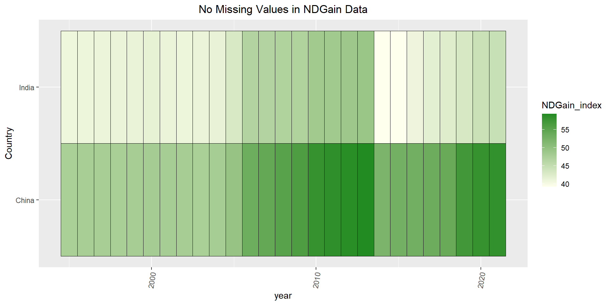

We are interested in exploring several dimensions of India and China’s demographics and economic behaviors in order to inform our conception of their growth stories. Therefore, we will consider several datasets available on the World Bank database https://data.worldbank.org/?locations=CN-IN, at least as part of our preliminary exploration. All of the data available here is either gathered by the Bank’s country management units, other international organizations (e.g. United Nations, International Labour Organization, etc.), or obtained from the countries’ statistical offices themselves. Depending on the series, the data are either updated monthly or annually, and are in time series format. These datasets can be accessed by downloading .csv files directly from the website.
Integral to our analysis will be considering key demographic and economic metrics of each country. For example, we will examine data on the countries’ per capita GDPs, population ages, population growth, and unemployment rates. This analysis will serve as a baseline assessment of trends in the two countries and how they compare. These databases were last updated on October 26, 2023 as of November 29, 2023, so we know that they contain up to date information.
To dive deeper into our investigation, we plan to contextualize our understanding of India and China’s economies under the lens of a few salient sociopolitical issues. First we wish to consider how climate change is impacting both nations. To do so we will examine time series data on greenhouse gas emissions from Climate Watch, which we can download as .csv from https://www.climatewatchdata.org/ghg-emissions?end_year=2020&start_year=1990. We will transform this data to understand how each country’s emissions per capita and per GDP have changed throughout the years. Additionally, we will supplement this data investigation with qualitative analysis of current trends in environmental regulations and international political discourse. This will help frame our understanding of how each countries’ economies may be changing as a result, and if one country happens to be situated better than the other. To supplement this discussion, we will also turn to times series data from the Notre Dame Global Adaptive initiative (ND-GAIN) which provides vulnerability scores based on a country’s exposure, sensitivity and capacity to adapt to the negative effects of climate change. Again, this data is times series (1995 - 2021) and directly available to download as .csv from https://gain.nd.edu/our-work/country-index/.
Next, we want to understand what role technology development and access plays into these economies. As a first step we will explore how the countries compare in terms of access to electricity and internet usage (World Bank time series data). We will further consider data on technology manufacturing as historically, both countries’ economies have been colloquially associated with significant technological exports.
Moreover, we gathered data describing housing prices in various countries: https://data.oecd.org/price/housing-prices.htm. Monthly data from the OECD website are generally two to three months behind the current date and for most annual publications, the most recent data will be from at least one year before the date of publication. One issue with this data is that the data from China only starts from 2010-2022 and the data from India only starts from 2009-2022, but we would like both of these to contain data from previous decades. This data provides important implications on the standard of living available to residents of each country, and how individuals are faring within their macroeconomic environments.
2.1.1 Research Plan
Using these datasets, we will be able to compare factors that impact a nation’s economy to determine recent trends in China and India’s economy. Through visualizations comparing these factors faceted by the two countries, we can attempt to predict which country will have stronger economic growth in the future given recent and prior historical trends.
Perhaps the most important metric for determining economic growth is the percentage of GDP growth because it gives information about the value of all goods and services produced by a country while adjusting for price changes over specific time periods. We can view this information in the dataset below:
To compare the GDP growth of China and India, we will create a time series plot comparing the GDP growth since the 1960’s and we can use a bar chart to compare the GDP growth of the two countries in specific years using other prosperous countries, such as the US, as benchmarks. The world bank data is stored in a csv in a strange format. First, the first four rows contain no data except information on the contents of the data and when the data was last updated. Hence, we delete the first four rows to get the file in a readable form for R. Next, the rows of the file are associated with a different country and the columns of the data contain the years 1960 to 2021, and the values stored are the metric that is being compared in the data, such as GDP growth percentage. To convert this data into tidy format, we need to use pivot longer in R to get the years and countries into its own column, which makes plotting much simpler. Thus, we have the data necessary to compare GDP growth of China and India throughout many decades which will help answer the question of how their historical trends will set them up for the future.
Another example in the World Bank database mentioned above is a dataset that contains the unemployment rates for various countries:
This dataset will help explore one of the metrics, unemployment, that will help answer the question of how the two countries’ growths have differed. We will use this to create a time series plot comparing the unemployment rates of China and India from the year 1991 onward. By viewing the unemployment trend, we can determine whether China or India’s unemployment rate is on a downward trajectory, which is a good indication of a flourishing economy. Likewise, if unemployment rate has an upwards trajectory then this would be an indication of a declining economy.
When downloading the csv file, we see like with the GDP data, the data contains rows going from 1960 to 2022 and the columns represent the names of different countries including China and India. From this data we will subset the countries to only look at the China and India columns and we will create time series plots to compare the unemployment rate trends in the past 3 decades.
Moreover, we utilize the environmental data to answer the question of how vulnerable each country is to potential climate-related disaster through the ND-GAIN index. A higher ND-GAIN index indicates that the country has a higher capacity to adapt to the negative effects of climate change.
Finally, for the housing prices index data, we will use higher values as an indicator of economic growth. In general, rising house prices encourages additional construction spending to maximize profit, leading to more robust economic growth. To access this dataset, we can download a csv from the website with a location, time period, and value column. This time, the data is already in tidy form, so we do not need to pivot longer. Again we will subset the data to examine China and India, and maybe other countries to use for comparisons. We can use a time series plot or dotplot to compare the real housing prices index for China and India as a criterion for which country has had a better growing housing market.
2.2 Missing value analysis
To view any missing data for the unemployment data, we subsetted the data to only include China and India, and pivoting the data to include the years as one column. When loading the data in from the csv files, we noticed that the years were in the form: “X1960”, instead of “1960”. To fix this we . We then use a heatmap to display the rows and columns containing missing values. From this, we see the unemployment data set contains missing values for the years 1960 through 1991. To fix this, we will simply remove the missing values because the 32 years is sufficient data for answering our research question. If necessary, we could also supplement the missing data with information from a different source, but it is difficult to determine if the data will be accurate if the World Bank does not have access to the information.
Code
library(tidyr)library(tidyverse)
── Attaching core tidyverse packages ──────────────────────── tidyverse 2.0.0 ──
✔ dplyr 1.1.4 ✔ purrr 1.0.2
✔ forcats 1.0.0 ✔ readr 2.1.4
✔ ggplot2 3.4.4 ✔ stringr 1.5.1
✔ lubridate 1.9.3 ✔ tibble 3.2.1
── Conflicts ────────────────────────────────────────── tidyverse_conflicts() ──
✖ dplyr::filter() masks stats::filter()
✖ dplyr::lag() masks stats::lag()
ℹ Use the conflicted package (<http://conflicted.r-lib.org/>) to force all conflicts to become errors
Code
library(ggplot2)library(dplyr)library(scales)
Attaching package: 'scales'
The following object is masked from 'package:purrr':
discard
The following object is masked from 'package:readr':
col_factor
ggplot(final, aes(year,Country, fill = unemployment)) +geom_tile(color ="Black") +theme(axis.text.x =element_text(angle =80, vjust=0.5))+ggtitle("Grey Represents Missing Values")+scale_fill_continuous(low ="yellow", high ="firebrick3")+theme(plot.title =element_text(hjust =0.5))
Similarly, for the GDP growth for both countries, we see that this time we have much more data from previous decades up until 1960. Since this value is missing for both China and India, we can again remove this missing value because not know this value is not that important because we have so much other data past 1960. Thus, we can see that the only missing values in any of these datasets will be where the countries have no data for a certain period of time. Since we will have data from different periods of time for different metrics that determnine economic growth, instead of looking at time periods that contain no missing data, we will instead use all the available data because both countries contain nonmissing data for the same years, which allows for easy comparisons.
ggplot(finalcic, aes(year,Country, fill = NDGain_index)) +geom_tile(color ="Black") +theme(axis.text.x =element_text(angle =80, vjust=0.5))+ggtitle("No Missing Values in NDGain Data")+scale_fill_continuous(low ="#FFFFED", high ="#228B22")+theme(plot.title =element_text(hjust =0.5))

Now we will look at the environmental dataset that is not obtained from the World Bank website. To view any missing values, again we subset the data to include only China and India, then pivot longer. We see after displaying the row and column values in a heatmap that there are no missing values in this dataset. However, we only have data starting from 1995, which is still a good amount of time to observe the trend in each country.